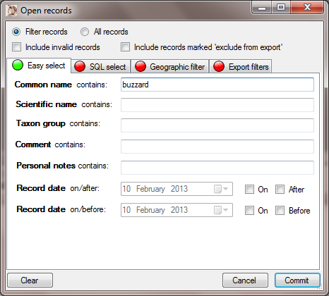
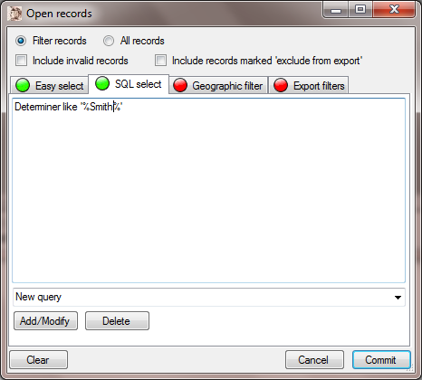
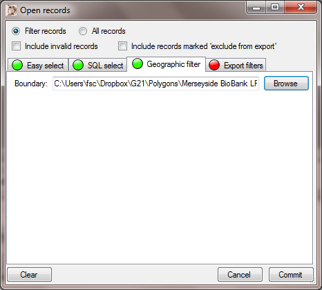
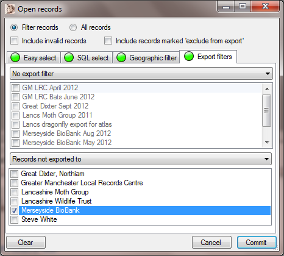

Gilbert 21 - opening records
The Open records dialog is invoked by selecting the Open records item from the File menu. Use this dialog to indicate which records you want to open (i.e. populate the record list on the Main Gilbert 21 form).
At the top of the you must specify whether you want to filter records (the default) or retrieve all records. If the Filter records option is selected then only the records which match the selection criteria you specify will be retrieved, otherwise, if you select All records, then all records will be retrieved. In actual fact, whichever option you select, these records are subject to further filters as indicated by the two check-boxes below these options. Unless you check the Include invalid records check-box, then only valid biological records will be retrieved and unless you check the Include records marked 'exclude from export' check-box, then records marked as 'exclude from export' will not be retrieved. Both of these check-boxes are unchecked by default which means that only valid biological records not marked to be excluded from exports will be retrieved.
The Clear button at the foot of the dialog clears all selection criteria and filters. The Cancel button removes the dialog without carrying out a selection. The Commit button removes the dialog and carries out the selection.
The Easy select tab

The Easy select tab is the place where records can be very quickly specified using the most frequently required selection (search) criteria. The example above shows how to select all Buzzard records. The Common name, Scientific name, Taxon group, Comment and Personal notes, text fields accept search terms against which records are filtered. These are not case sensitive. Partial matches are carried out so, for example, the search term cuckoo against Common name will bring back records of Cuckoo (the bird) as well as Cuckoo-flower. You can specify as many search patterns as you like, only records which match them all will be selected.
The record date fields are self explanatory. You can use these to limit records to those made on and/or after a given date or on and/or before a given date. By using both of these date selection controls you can specify records that only occur between two dates.
The SQL select tab

The SQL select tab allows you to specify complex queries using Structured Query Language. This allows much more complex queries than the Easy select tab, but it requires you to understand a little about SQL syntax. You can find examples and tutorials for this on the web. Alternatively you can right-click the mouse anywhere in the text area to pop-up a menu that helps you to build queries. You can type straight into the SQL text area if you prefer. In the example shown above, all records that have a determiner with the text 'smith' included anywhere in the name will be returned (the % symbol is known as a 'wildcard' and matches zero of more characters of any type).
You can save SQL queries by giving them a name in the text edit/drop-down list field where it says 'New query' and clicking the Add/Modify button. Queries saved in this way can later be selected from the drop-down list. When the name of a query is selected from the drop-down list, the associated SQL is pasted into the SQL text area. If you modify SQL from a query selected in this way, just click the Add/Modify button to update the saved query. You can delete a saved query by selecting it and then clicking the Delete button.
The Geographic filter tab

You can filter selected records based on whether or not they fall within a specified polygon. To do this, your polygon must be specified in a simple text file with one easting/northing pair of the polygon vertices on each line of the file as shown, for example, below:
366357.14 412590
366354.69 412568.54
366353.87 412546.23
366351.69 412524.55
366341.26 412506.53
366334.52 412485.18
366330.04 412464.6
The easting comes first, then a space and then the northing. Most GIS packages are capable of exporting polygons in a text format which can easily be edited to get this format (for example MapInfo's MIF format).
Alternatively, you can select a KML file that you have exported from Google Earth, which specifies a polygon.
When you have a file, select it from the Geographic filter tab using the Browse button. Gilbert 21 will test each grid reference square associated with each candidate record you select and, if it doesn't overlap the polygon, it will not be returned in the results.
The Export filters tab

The Export filters tab allows you to select records based either on their membership (or non-membership) of selected exports, or on whether or not they have ever been exported to specified recipients. You can specify either an export or recipient filter, but not both at once. To use a filter, select the filter operation (see below) and then check the boxes associated with one or more export or recipients (as appropriate) from the corresponding lists.
The export filter drop-down list includes the following operations:
For the first two options, you can select more than one export in the list, but for the other three options, you can only select a single option. Be careful with the three created/modified since options - these compare dates associated with the records to the date on which the selected export was made. But the dates it compares - the created date and modified date - are not the same as the record date. For example a record could be entered after the date of an export but with a record date that is earlier than the date on which the export was made. Such a record would still be selected by the operations Records created since and Records created or modified since.
The recipients filter drop-down list includes the following operations:
For either of these options you can specify one or more recipients.
Putting it all together
All of the different selection methods described above can be used singly or in conjunction with one another. So that it is clear when any of the four tabs has selection criteria specified they each have an indicator associated with them. When the indicator is red, then no criteria has been specified on that tab. When the indicator is green, then selection criteria are specified on that tab.
Note that all the criteria specified on the Easy select tab are joined by implicit SQL 'and' operators. If you specify criteria on both the Easy select tab and the SQL select tab, then the entire query you specify on the SQL tab is enclosed by parentheses and joined to those on the Easy select tab with an SQL 'and' operator.
Note that you can quickly clear all the selection criteria on all tabs by clicking the Clear button.
Created with the Personal Edition of HelpNDoc: Free help authoring tool